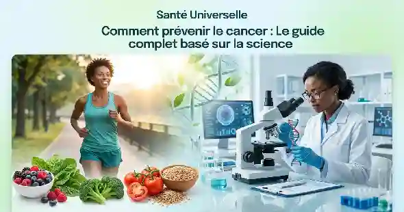

Santé Connectée & IoT
Comment les objets connectés et les capteurs intelligents transforment le suivi médical à distance et permettent une prévention personnalisée et en temps réel.
Explorez les dernières avancées médicales, les outils connectés et les solutions d'accès universel aux soins pour améliorer votre bien-être au quotidien.
Découvrir nos articlesComment les objets connectés et les capteurs intelligents transforment le suivi médical à distance et permettent une prévention personnalisée et en temps réel.
L'intégration des algorithmes prédictifs dans les diagnostics médicaux modernes pour optimiser la précision, la rapidité et l'efficacité des traitements.
Analyse des plateformes numériques et des solutions open-source qui brisent les barrières géographiques pour apporter la médecine là où elle est nécessaire.

Prévention & ScienceSelon l’Organisation Mondiale de la Santé (OMS), entre 30 % et 50 % des cas de cancers pourraient être évités en modifiant nos habitudes de vie et en éliminant les facteurs de risque majeurs. Découvrez dans ce guide complet basé sur les dernières données de la médecine moderne comment optimiser votre alimentation, reprogrammer vos cellules par l'activité physique et utiliser les outils de dépistage précoce...
Lire l'article complet